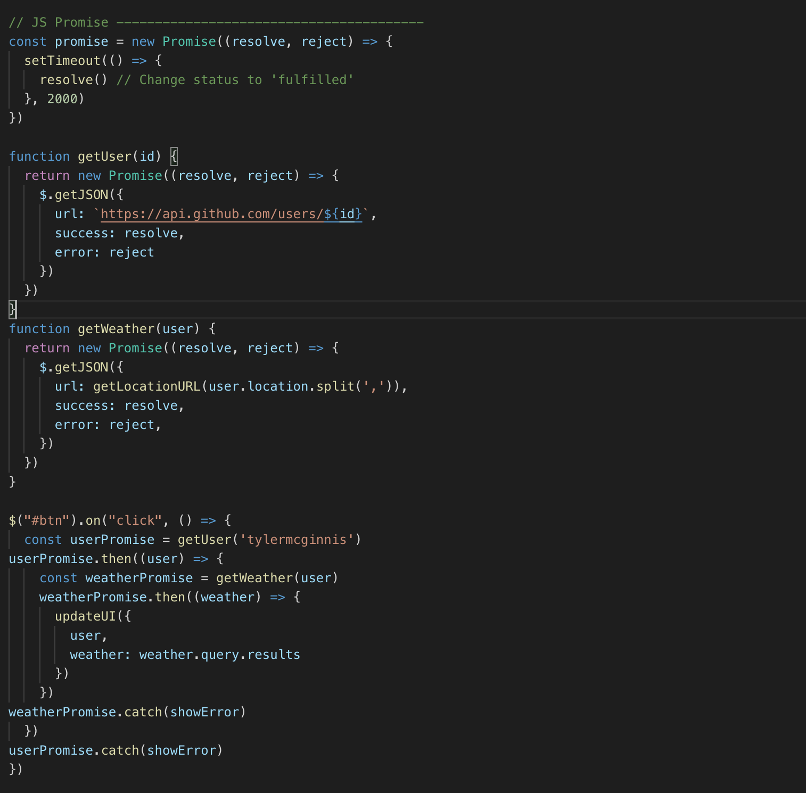

Closures
When code is run in JavaScript, the environment in which it is executed is very important, and is evaluated as 1 of the following:
Global code - The default environment where your code is executed for the first time.
Function code Whenever the flow of execution enters a function body.
think of the term execution context as the environment / scope the current code is being evaluated in.
- JavaScript creates a new execution context, a local execution context
- That local execution context will have its own set of variables, these variables will be local to that execution context.
- The new execution context is thrown onto the execution stack. Think of the execution stack as a mechanism to keep track of where the program is in its execution
When the program calls a function, what happens?
- The local execution contexts pops off the execution stack
- The functions sends the return value back to the calling context. The calling context is the execution context that called this function, it could be the global execution context or another local execution context. It is up to the calling execution context to deal with the return value at that point. The returned value could be an object, an array, a function, a boolean, anything really. If the function has no return statement, undefined is returned.
- The local execution context is destroyed. This is important. Destroyed. All the variables that were declared within the local execution context are erased. They are no longer available. That’s why they’re called local variables.
When a function ends, the following happens:
One intricacy of JavaScript is how it looks for variables. If it can’t find a variable in its local execution context, it will look for it in its calling context. And if not found there in its calling context. Repeatedly, until it is looking in the global execution context. (And if it does not find it there, it’s undefined)
a function has access to variables that are defined in its calling context. The formal name of this phenomenon is the lexical scope.
Here is how it works. Whenever you declare a new function and assign it to a variable, you store the function definition, as well as a closure. The closure contains all the variables that are in scope at the time of creation of the function. It is analogous to a backpack. A function definition comes with a little backpack. And in its pack it stores all the variables that were in scope at the time that the function definition was created.
Whenever you declare a new function and assign it to a variable, you store the function definition, as well as a closure. The closure contains all the variables that are in scope at the time of creation of the function. It is analogous to a backpack. A function definition comes with a little backpack. And in its pack it stores all the variables that were in scope at the time that the function definition was created.
Every function has a closure...event functions created in the Global Scope. When a function returns a function, that is when the concept of closures becomes more relevant.
Partial Application is basically a design pattern where your function returns another function that takes an argument. For example, you can call your function like this: myFun(arg1)(arg2), which is equivalent to:
Partial application is a powerful design pattern because you can continuing chaining things like myFun(arg1)(arg2)(arg3)… What’s happening here is akin to an assembly line in a factory: One argument at a time is applied to myFun to evaluate a better and better partial solution until all the arguments are applied to provide a complete solution.
Destructuring is a powerful way to create variables from values in arrays and objects...can make your code simpler.
Array destructuring

- Blog Posts. Ex... you want first post formatted differently than all the other posts.
- const [starPost, ...otherPosts] = blogPosts;
- Blog Posts. Ex... you just need the first three posts of the array, you can just declare three variables and the rest will be ignored.
- const [post1, post2, post3] = blogPosts;
Array destructuring use cases:
Object Destructuring
best use of object destructuring is the handling of options
by writing options = {} as the argument, we specify that if nothing is passed, by default we will use an empty object as the passed options.
Better Programming in JS
ESLint is a tool for static code analysis. It is the most important tool that allows us to find potential issues within the codebase and ensure high quality of the codebase. The best part is that linting is a fully automated process and can be used to prevent the low-quality code from making its way into the codebase.
ES-LintES-Lint Configuration
ESLint rules into your project one-by-one as well. Configure them initially as warn, and once you’re comfortable, you can convert some of the rules into error.
In the root directory of your project run:
npm i -D eslint npm i -D eslint-plugin-fp
Then create a .eslintrc.yml file within the root directory of your project:
env: es6: true plugins: fp rules: # rules will go in here
You can also run ESLint manually from the command line: npx eslint .
rules: max-lines: - warn - 200 (sets the max lines to 200 for files)
advanced console commands
console.log({ foo, bar });
console.warn() & console.error()
console.group() can be used when grouping or nesting together relevant details to enable you to read the logs easily
Why 'this' is so powerful
“this” is a keyword used in JavaScript that has a special meaning depending on the context it’s being used
Context is always the value of the this keyword which is a reference to the object that “owns” the currently executing code.
Functions that sit in the global context (not as a method on an object) will point the ‘this’ keyword back to the Window object.
When “this” is inside an object, it refers to the object itself (returns the object itself)
Anytime you have an object nested inside another object, and then ‘this’ points to the object on which the method is defined.
this on Arrow functions returns window object(or global context). An arrow function expression has a shorter syntax than a function expression and does not have its own this, arguments, super, or new.target. These function expressions are best suited for non-method functions, and they cannot be used as constructors

However, if a function is executed in strict mode, ‘this’ will return undefined because strict mode does not allow default binding.

if you want to use ‘this’ in strict mode, ‘this’ must be defined by the execution context because ‘this’ is not automatically attached to any object (not even the Window object).
When ‘this’ is called from a function declared outside of an object
In this context, the function chase() returns undefined because when run in the global context, ‘this’ points to the window object by default and does not have the properties (‘breed’ or ‘lovesToChase’) defined on that object.
A constructor function allows us to define an object (like Number or String, except it has its own special properties and methods).
It’s important to note that ‘this’ does not have a value while in the constructor function.
The slice method provides a mechanism for creating a shallow copy of a subset of a list, without modifying the original list. Thus it provides a key building block for writing functional JavaScript.
The slice method is not to be confused with the splice method, which modifies an array in place
- Functional programming, particularly higher level functions, works heavily with lists of data.
- Functional programming requires pure functions, functions that do not cause side effects or modify their input data.
And with the rise of React and other functionally oriented JavaScript practices, it is becoming even more important, for 2 key reasons:
arr.slice([begin[, end]]);
The slice method creates a copy of the array starting at begin up to but not including end.
It also accepts negative indices, which indicate counts back from the end of the array.

Another huge area of use for slice is to manipulate arrays in a functional/pure way, without modifying the original array.
A powerful and common use of slice in a functional context is to replace the value of a particular item in an array. Imperatively this is simple, you just assign the new value, but in a functional world you can’t modify the original array.
Async JS
If giving the restaurant your number is like giving them a callback function, receiving
the little buzzy thing is like receiving what’s called a
Promise can be in one of three states, pending, fulfilled or rejected... they represent the status of an asynchronous request.
When you create a new Promise, you’re really just creating a plain old JavaScript object. This object can invoke two methods, then, and catch. Here’s the key. When the status of the promise changes to fulfilled, the function that was passed to .then will get invoked. When the status of a promise changes to rejected, the function that was passed to .catch will be invoked. What this means is that once you create a promise, you’ll pass the function you want to run if the async request is successful to .then. You’ll pass the function you want to run if the async request fails to .catch.
Chaining Both .then and .catch will return a new promise. That seems like a small detail but it’s important because it means that promises can be chained.
thread the data (users) from the first async request all the way through to the last .then.
Async / Await anytime you add async to a function, that function is going to implicitly return a promise.
When you add async to a function it does two things. It makes it so the function itself returns (or wraps what gets returned in) a promise and makes it so you can use await inside of it.
With Async/Await... catch errors by wrapping in try / catch blocks generally.

What’s the difference between imperative and declarative programming?
We can also think about the difference between OOP and FP in terms of the difference between “imperative” and “declarative” programming.
FP is an example of declarative programming, while OOP is an example of imperative programming.
In a basic sense, imperative programming is concerned with how you do something. It spells out the steps in the most essential way, and is characterised by for and while loops, if and switch statements, and so on.
By contrast, declarative programming is concerned with what to do, and it abstracts away the how by relying on expressions. This often results in more concise code, but at scale, it can become more difficult to debug because it’s that much less transparent. Here’s a declarative approach to our sumArray() function, above.

What is Prototype-Based Inheritance?
There are several different styles of Object-Oriented Programming, and the one JavaScript uses is Prototype-Based Inheritance. The system allows for repeated behaviour via the use of existing objects that serve as “prototypes”.
Even if the idea of prototypes is new to you, you will have encountered the prototype system by using in-built methods. For example, functions used to manipulate arrays such as map , reduce , splice and so on are all methods of the Array.prototype object. In fact, every instance of an array (defined using square brackets [], or — more unusually — using new Array()) inherits from Array.prototype , which is why methods like map , reduce and spliceare available by default.
The same is true of virtually every other built-in object, such as strings and booleans: only a few, such as Infinity , NaN , null and undefined have no properties or methods. At the end of the prototype chain we find Object.prototype , and almost every object in JavaScript is an instance of Object.prototype : Array.prototype and String.prototype , for example, both inherit properties and methods from Object.prototype . To add properties and methods to an object using prototype syntax, you can simply initiate the object as a function, and use the prototype keyword to add properties and methods:
Should I Override or Extend the Behaviour of Prototypes?
It’s possible to change the behaviour of built-in prototypes in exactly the same way that we can create and extend our own prototypes, but most developers (and most companies) would advise against this. If you want several objects to share the same behaviour, you can always create a custom object (or define your own ‘class’ or ‘subclass’) that inherits from a built-in prototype without making any changes to the prototype itself. If you’re going to be working with other developers, they’ll have certain expectations about JavaScript’s default behaviour, and editing this default behaviour can easily lead to errors. It’s worth noting, however, that not everyone shares this strong opposition to extending built-in prototypes. See, for example, this article from Brendan Eich, the creator of JavaScript. In this article (from 2005), Eich suggested that the prototype system in fact was built — in part — to make extensions possible!